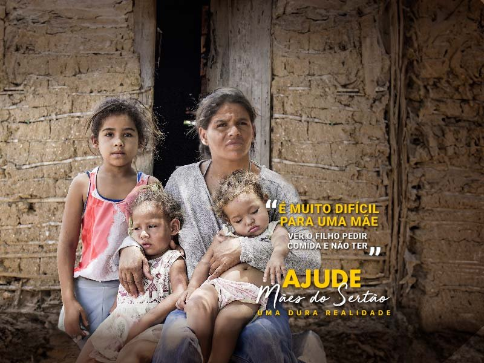
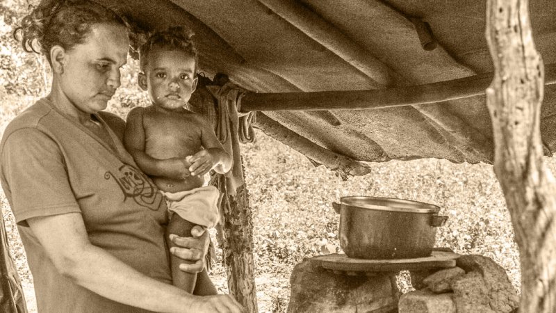
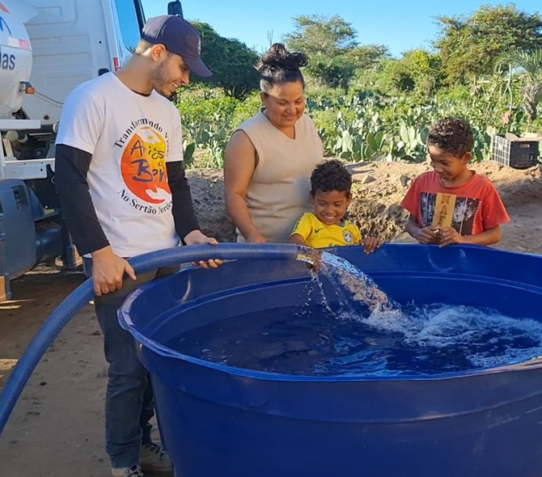
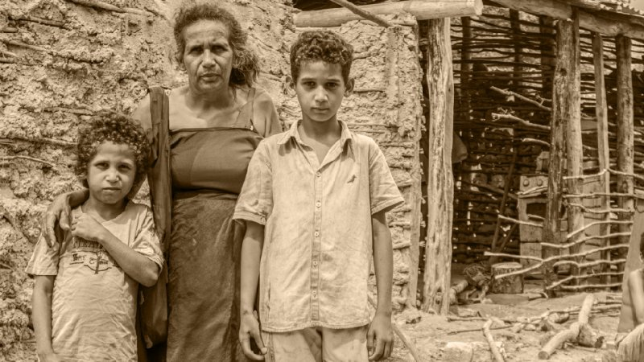
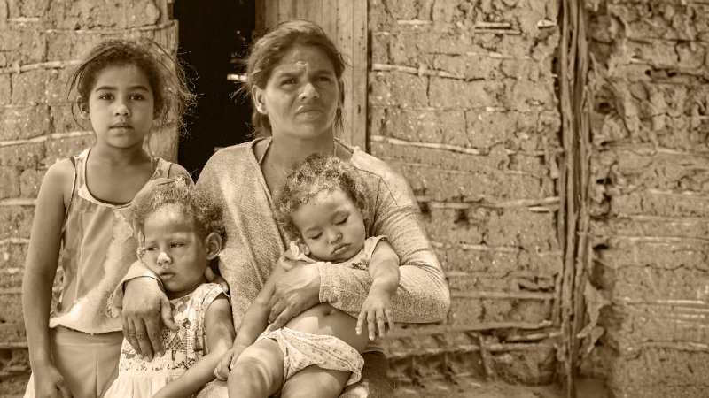

A fome e a seca no Sertão punem quem menos merece: as mães e seus filhos.

Ajude a levar alimento, água potável e dignidade para milhares de mães que lutam diariamente para manter suas famílias vivas no sertão nordestino.
Ela carrega a casa inteira nas costas. Lutando contra o sol escaldante.

Maria de Fátima tem 34 anos e 4 filhos pequenos. No sertão mais profundo, onde a terra racha e a água é um privilégio de poucos, ela enfrenta a miséria extrema todos os dias, sem reclamar.
Todos os dias, ela caminha quilômetros sob o sol forte para conseguir um balde de água barrenta e pesada. É com ela que cozinha as poucas palmas de cacto que encontra para saciar o choro das crianças.
Seu maior pesadelo? Olhar nos olhos de seus filhos no fim do dia e não ter um único pedaço de pão para dar.

Sem emprego, sem água encanada e sem perspectiva de melhora. As famílias vivem em casas de taipa feitas de galhos e barro, que racham sob o calor intenso e ameaçam desabar a qualquer momento.
A desnutrição crônica afeta o crescimento físico e mental das crianças. Cada dia que passa na escassez deixa marcas profundas na saúde de toda a família.
O médico voluntário que atende a região relata: "A fome aqui não é apenas física; ela rouba a dignidade de quem não tem sequer água limpa para beber."
"Minha maior dor é ver meus filhos chorando com fome e eu só ter água barrenta para oferecer."
— Relato de Maria de Fátima
A fome e a sede são companheiras diárias em povoados isolados.
A seca extrema castiga a vegetação, seca os poços rasos e isola comunidades inteiras do restante do país.
O Amigos do Bem trabalha incansavelmente para reverter esse cenário desafiador. Levamos caminhões-pipa, construímos cisternas e perfuramos poços para garantir que a água potável chegue até as torneiras de quem mais precisa.
Como dizem os voluntários:
"A água transforma o sertão. Ela traz saúde, permite o cultivo e devolve a esperança que a seca tentou arrancar."
Para Maria e tantas outras mães, ver a água limpa jorrar é um milagre esperado por gerações.
E a sua ajuda é fundamental para mantermos esse trabalho ativo.
Geração de trabalho e renda para transformar vidas.

Além de água e alimento de urgência, a transformação real acontece através da educação e da geração de trabalho e renda.
Nas fábricas sociais criadas pelos Amigos do Bem, centenas de mães do sertão aprendem um ofício, produzem doces, castanhas e artesanatos de alta qualidade, conquistando sua independência financeira pela primeira vez.
Isso muda tudo. Garante que elas possam alimentar seus filhos com o próprio suor, construindo uma nova história de orgulho e superação.
Essas mães não conseguem gritar por socorro. Mas você pode ouvi-las.

Então nós pedimos por elas.
Mães guerreiras, que dedicam cada gota de suor para garantir o futuro e o sorriso de seus filhos no semiárido nordestino.
Entre tantas páginas, redes sociais e momentos na internet, foi você quem chegou até aqui. Esse convite para ajudar não foi por acaso.
Agora é a sua vez de responder.
Cada dia sem ajuda é um dia a mais de escassez.
A seca não espera. A fome não espera. As necessidades das famílias são para hoje.
Mas você pode agir agora.
Qualquer valor faz diferença: R$ 30, R$ 50, R$ 100 ou mais ajudam a encher o prato e a garantir água potável na mesa dessas famílias.
As Mães do Sertão não podem pedir sozinhas. Mas você pode ajudar.
Quando você doa, você não está apenas enviando recursos.
Você está dizendo para uma mãe do sertão: "Você não está esquecida. Seus filhos terão comida hoje. Nós estamos com você."
Você está dando a elas o alicerce para construir um futuro digno.
Transforme vidas no Sertão. Doe agora.
Quanto você pode doar para ajudar as Mães do Sertão?
Escolha um valor. 100% da sua doação vai para levar água, alimento, educação e renda para o Sertão.
Mensagens de Apoio (8)
Contribui com 150 reais. É de partir o coração ver a realidade dessas mães e crianças. Que Deus abençoe esse trabalho maravilhoso!
Fiz minha parte com muito amor. Conheço o trabalho dos Amigos do Bem e sei que a ajuda realmente chega a quem precisa.
Doei de coração. Essas mães merecem nossa solidariedade para criar seus filhos com dignidade.
Doei o que pude, mesmo que seja pouco, espero que faça a diferença no prato de uma família.
Compartilhei com toda a minha família! Juntos nós podemos multiplicar o alimento para o sertão.
Que as bênçãos cheguem a essas mães incríveis! Fiz minha parte e continuarei ajudando.
Realizei uma doação mensal. É gratificante apoiar um projeto tão sério e transparente.
Fiz uma doação de 300 reais, na torcida de que traga alívio e esperança para essas famílias.
As Mães do Sertão não podem pedir ajuda sozinhas. Mas você pode dar.
Qualquer valor faz a diferença na mesa de quem não tem nada: R$ 30, R$ 50 ou R$ 100 podem significar água limpa e comida na mesa.
Transforme vidas no Sertão. Doe agora.